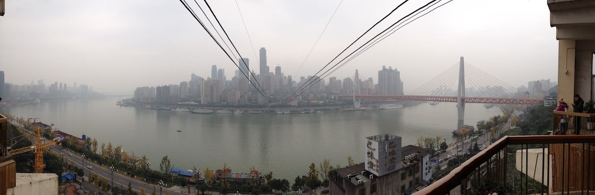

Chongqing (重庆) is a city in Southwest China that's situated on the confluence of the Jialing
and Yangtze rivers. It is one of four directly-controlled municipalities in China and has a total population
of around 30 million people.
The central city of Chongqing has around 8 million inhabitants. During WW2, Chongqing was the provisional
capital of the Republic of China.

View of downtown Jiefangbei from Nanping cable car station
Some facts about Chongqing
Facts about the area size and population of Chongqing
Municipality
Urban
Central city
Area
82,403 km2
5,472.8 km2
Population
30,165,500
18,384,100
around 8,000,000
Things to do in Chongqing
Try hotpot, the local speciality dish. If spicy food is your thing you need to try
this!
Take the cable car from Xiaoshizi, across the Yangtze river to Nanbin Road.
Visit the old town of Ciqikou, savour some classic Chongqing snacks and pick up some souvenirs.
Visit Hongyadong, have a drink and enjoy the view over the Jialing river, looking out over the new
Jiangbei CBD and the Grand Theatre.
Get a shopping fix in downtown Jiefangbei, home to some of the world's biggest (and most expensive!)
brands.
Notable Chongqing Cuisine
As mentioned above huo guo (火锅), or hotpot, is the most famous local specialty.
Chuan chuan (串串) is similar to hotpot in that you cook your food in spicy oil at your table. The big
difference is that the food comes on wooden skewers that you help yourself to from the fridge.
Chongqing xiao mian (小面) is basically noodles in a spicy sauce and is an extremely popular staple food
with locals.
Kao yu (烤鱼) is barbecued fish, usually river carp, accompanied with... you guessed it, lots of chilli.
The locals love their spicy food!
Shao kao (烧烤) is the local word for barbecued street food. Choose from a huge selection of skewered meat
and vegetables and see it cooked before your eyes. The perfect late night snack to enjoy with friends
and a few beers.
Take a look at this video about Chongqing
Here's a cool flyover video of some of Chongqing's sights